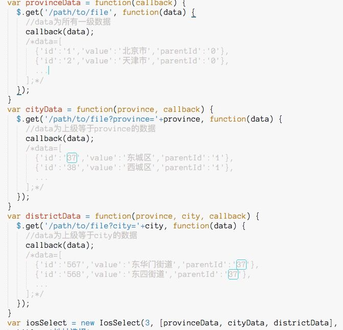

html下拉菜单select在安卓和IOS下表现不一样，iosselect正是为统一下拉菜单样式而生，我们以IOS下select的交互和样式为蓝本，开发了这一组件。
http://zhoushengfe.com/iosselect/website/index.html
备用网址: https://www.pengwf.com/iosselect/index.html
npm install iosselect
点击下载文件到项目目录中，在HTML文件中插入以下代码，并按需调整路径。
<link rel="stylesheet" href="/static/css/iosSelect.css">
<script type="text/javascript" src="/static/js/iosSelect.js"></script>
var data=[{'id': '10001', 'value': '演示数据1'},{'id': '10002', 'value': '演示数据2'}];
var showDom = document.querySelector('#showDom');// 绑定一个触发元素
var valDom = document.querySelector('#valDom'); // 绑定一个存储结果的元素
showDom.addEventListener('click', function () { // 添加监听事件
var val = showDom.dataset['id']; // 获取元素的data-id属性值
var title = showDom.dataset['value']; // 获取元素的data-value属性值
// 实例化组件
var example = new IosSelect(1, // 第一个参数为级联层级，演示为1
[data], // 演示数据
{
container: '.container', // 容器class
title: '演示标题', // 标题
itemHeight: 50, // 每个元素的高度
itemShowCount: 3, // 每一列显示元素个数，超出将隐藏
oneLevelId: val, // 第一级默认值
callback: function (selectOneObj) { // 用户确认选择后的回调函数
valDom.value = selectOneObj.id;
showDom.innerHTML = selectOneObj.value;
showDom.dataset['id'] = selectOneObj.id;
showDom.dataset['value'] = selectOneObj.value;
}
});
});
https://www.pengwf.com/iosselect/demo/one/bank.html
https://www.pengwf.com/iosselect/demo/two/sanguokill.html
https://www.pengwf.com/iosselect/demo/three/area.html
https://www.pengwf.com/iosselect/demo/rem/bank.html
https://www.pengwf.com/iosselect/demo/datepicker/date.html
https://www.pengwf.com/iosselect/demo/five/time.html
https://www.pengwf.com/iosselect/demo/six/time.html
https://www.pengwf.com/iosselect/demo/ajax/area2.html
https://www.pengwf.com/iosselect/demo/one/animate.html
https://www.pengwf.com/iosselect/demo/one/multi.html
https://www.pengwf.com/iosselect/demo/ajax/angular/index.html#/components
.ios-select-widget-box ul li
default: 1
type: number
数据的层级，最多支持6层
default: undefined
type: ...Array
[oneLevelData[, twoLevelData[, threeLevelData[, fourLevelData[, fiveLevelData[, sixLevelData]]]]]] 可以用数组，也可以用方法。 6项分别对应级联1,2,3,4,5,6项，每一项又是一个数组或方法 如果是数组： 每一项数组中包含一系列对象，每个对象必须要有id,作为该条数据在该项数组中的唯一标识，value作为显示值，parentId是可选属性，作为关联的标志，数据形如：
var iosProvinces = [
{"id": "130000', "value": "河北省", "parentId": "0"}
];
var iosCitys = [
{"id":"130100","value":"石家庄市","parentId":"130000"},
];
当我们选择河北省时，就到城市中找到parentId为河北省id的数据，然后展示出来。 点击查看demo： https://www.pengwf.com/iosselect/demo/three/area.html
如果是方法： 传入一个方法，在方法中获取数据，该方法有该列前序列的选中值和回调方法。 如果是第一列的方法，可如下定义：
function oneFun(callback) {
var arr1 = [];
callback(arr1);
}
如果是第二列的方法，可如下定义：
function twoFun(oneLevelId, callback) {
var arr2 = [];
callback(arr2);
}
如果第三列，可如下定义方法：
function threeFun(oneLevelId, twoLevelId, callback) {
var arr3 = [];
callback(arr3);
}
依次类推，第六列获取数据的方法可如下定义：
function sixFun(oneLevelId, twoLevelId, threeLevelId, fourLevelId, fiveLevelId, callback) {
var arr6 = [];
callback(arr6);
}
在方法里可以根据前序列的选中值定义需要的数据，比如年月日，当年月变化时，可根据年月选中值，设置日期的取值范围。
具体可参考demo中的日期选择器和日期时间选择器。 点击查看demo： https://www.pengwf.com/iosselect/demo/datepicker/date.html
如何ajax获取数据

type: object
其余选项，含以下几个属性：
default: ''
type: string
实例化后的对象包裹元素，可选项
default: undefined
type: function
选择完毕后的回调函数，必选项 options.callback(selectOneObj, selectTwoObj, selectThreeObj, selectFourObj, selectFiveObj, selectSixObj) selectNumberObj为每级对应选中项，包含对应数据的所有字段及dom对象
default: undefined
type: function
选择取消后的回调函数，可选项
fallback: function (e) {
console.log(e);
},
default: undefined type: function
点击背景层关闭组件时触发的方法，可选项
fallback: maskCallback (e) {
console.log(e);
},
default: ''
type: string
显示标题，可选项
default: '确定'
type: string
设置确定按钮文字，可选项
default: '取消'
type: string
设置取消按钮文字，可选项
default: 35
type: number
每一项的高度，可选项
default: 7
type: number
组件展示的项数，可选项，可选3,5,7,9，不过不是3,5,7,9则展示7项
default: 44
type: number
组件标题栏高度，可选项
default: 'px'
type: string
元素css尺寸单位，可选项，可选px或者rem
default: ''
type: string
组件额外类名，用于自定义样式，可选项
default: [0, 0, 0, 0, 0]
type: ...Array
[oneTwoRelation, twoThreeRelation, threeFourRelation, fourFiveRelation, fiveSixRelation] 可选项。如果数据是数组(非方法)，各级选项之间通过parentId关联时，需要设置；如果是通过方法获取数据，不需要该参数。
default: 0
type: number
第一列和第二列是否通过parentId关联，可选项
default: 0
type: number
第二列和第三列是否通过parentId关联，可选项
default: 0
type: number
第三列和第四列是否通过parentId关联，可选项
default: 0
type: number
第四列和第五列是否通过parentId关联，可选项
default: 0
type: number
第五列和第六列是否通过parentId关联，可选项
type: string
实例展示时，第一级数据默认选中值，可选项，默认为第一级数据第一项id
type: string
实例展示时，第二级数据默认选中值，可选项，默认为第二级数据第一项id
type: string
实例展示时，第三级数据默认选中值，可选项，默认为第三级数据第一项id
type: string
实例展示时，第四级数据默认选中值，可选项，默认为第四级数据第一项id
type: string
实例展示时，第五级数据默认选中值，可选项，默认为第五级数据第一项id
type: string
实例展示时，第6级数据默认选中值，可选项，默认为第6级数据第一项id
default: false
type: boolean
实例展示时，在数据加载之前下拉菜单是否显示加载中的效果，建议ajax获取数据时设置为true
default: false
type: boolean
是否显示入场动画和退场动画，如需自定义动画效果，请覆写.fadeInUp .layer和.fadeOutDown .layer的css3动画。PS:动画时间为0.5秒。
关闭已实例化的组件
object.close();
组件创建完毕事件
window.addEventListener('IosSelectCreated', function(e) {
console.log(e);
});
组件销毁事件
window.addEventListener('IosSelectDestroyed', function(e) {
console.log(e);
});